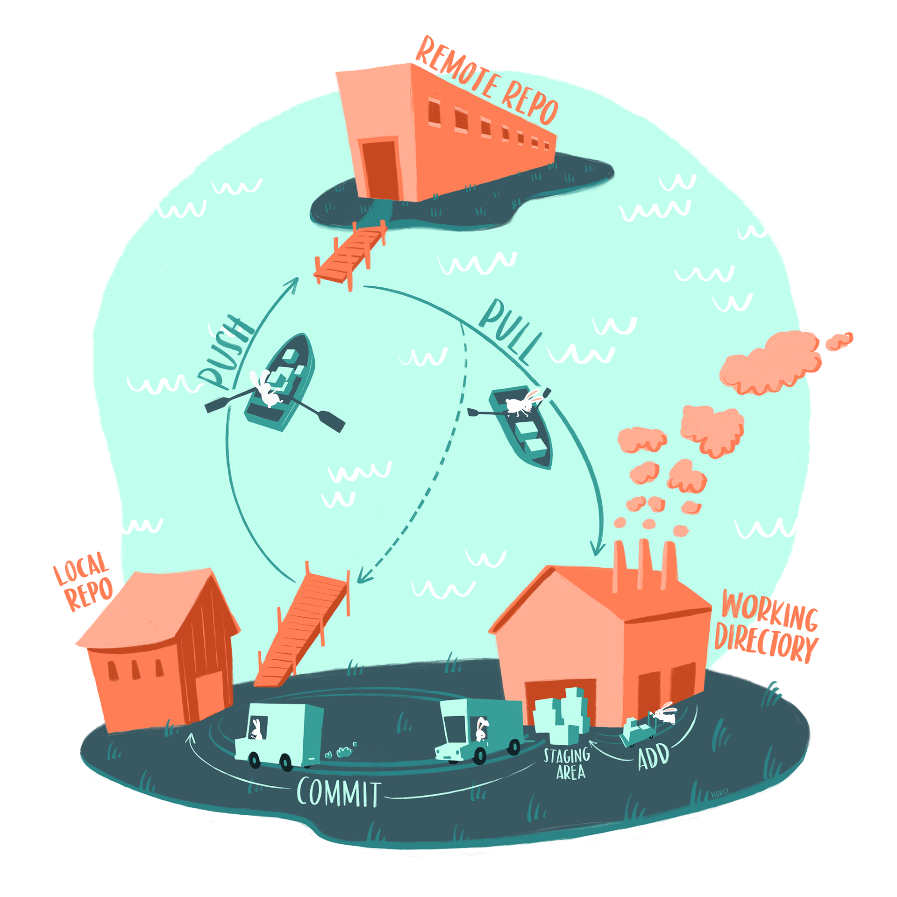
Reproducibility 05: Making Changes with Git and GitHub 🐱
Using Quarto/RStudio, GitHub, and GitHub Desktop to edit contents in a repository🤩️.
git
github
version control
quarto
1 Introduction
We are continuing this semester’s Code Club series on reproducible research. So far, we have gone through:
- Some basics of reproducibility, file organization, and RStudio projects
- An intro to Quarto
- A little more about Quarto
Last time, we went over how to:
- Install Git
- Create a GitHub account
- Install GitHub desktop and link it to your GitHub account
- Render a GitHub flavored markdown document
- Add our repository to GitHub desktop and add version control
- Publish your repository
The book Happy Git and GitHub for the useR is a super good resource by Jenny Bryan that talks about all this in extreme detail. Some of my materials below are inspired by some of this material.
Today, we are going to go over:
- How to edit contents in your repository
- How to push those changes to GitHub
- How to set up a
.gitignore
2 Edit contents in your repo
You all should by now have a repo which contains our material from the last Code Club session. One thing that came up last time was making changes to your README.md so that the material on the front page of your repo is updated with some information about its contents.
Last time, we initialized our repository with a README. If we look into our directory that is being tracked by git, we will see a file called README.md. Go ahead and open it.
If you didn’t initialize with a README, that is ok, we can make one.
Go to File > New File > Markdown file. Save this file in your folder being tracked by git with the name README.md.
Since my README was pushed to GitHub, you can see it there:
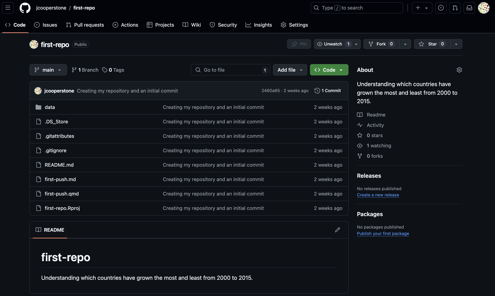
When I initialized my README, I gave it a description, so you can see that listed underneath the name of the repo on GitHub.
We can open up that README.md in RStudio to make edits to it.
My file looks like this:
# first-repo
Understanding which countries have grown the most and least from 2000 to 2015.Let’s make some changes to our README.md and push them to GitHub.
Since this is a Markdown document (file extension .md), it needs to be written in the Markdown language.
- The “#” indicates a level 1 (i.e., top level) header. That is why this is rendered to be larger and bolded text.
- Regular text can be typed just like you would in a text editor.
I am going to change my file to look like this:
# Country-level population growth from 2000 to 2015
This repository contains code to calculate the percent rate of growth for each
country from 2000 to 2015. The data comes from
[The World Factbook](https://www.cia.gov/the-world-factbook/) and can be
downloaded on its own [here](https://github.com/osu-codeclub/osu-codeclub.github.io/blob/main/posts/S08E01_wrangling_01/factbook_download.csv).Click Preview to render your README.md and see how it looks.
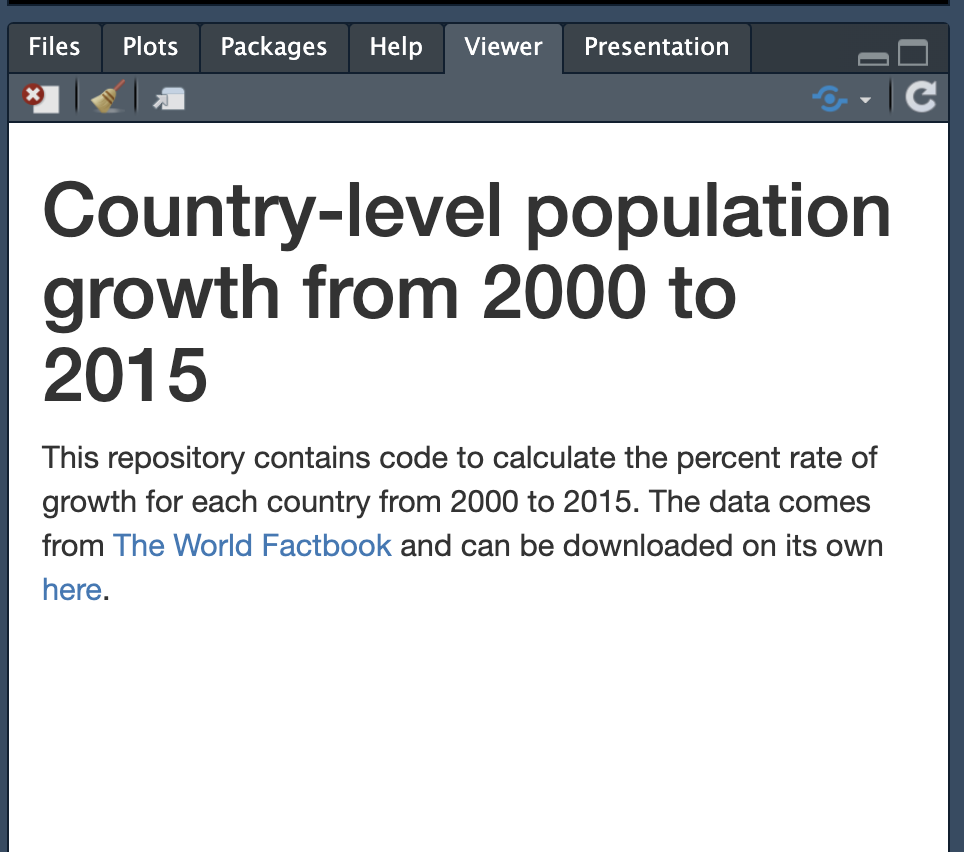
2.1 Practice
Try making a change to your README and preview the change.
2.2 Push your changes to GitHub
Now that we’ve made a change to our README.md, let’s push that change to GitHub. Start by opening GitHub Desktop. Make sure your repo is selected in the top right corner.
We now see something we didn’t see before.
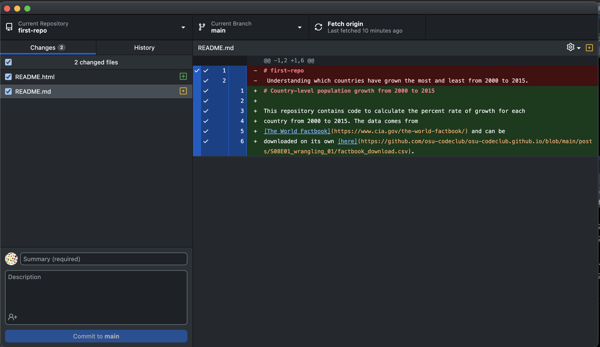
All of the changes we made are now tracked and specified in GitHub Desktop. We can see that two files have changed (our README.md and README.html). If you click on README.md you can see the changes we just made. These changes look more chaotic because they’re rendered in html.
To send these changes to GitHub, we can enter a commit message, and click Commit to main.
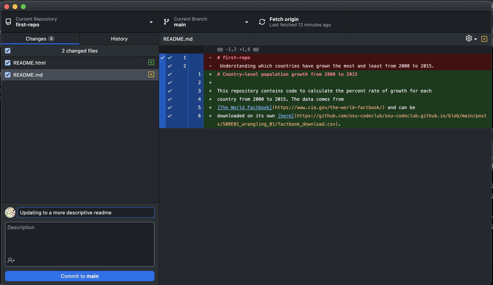
Then we will click Push origin (either as the blue button or on the top right). Note that in the bottom right corner, we can see what our commit was (here, mine was “Updating to a more descriptive readme”).
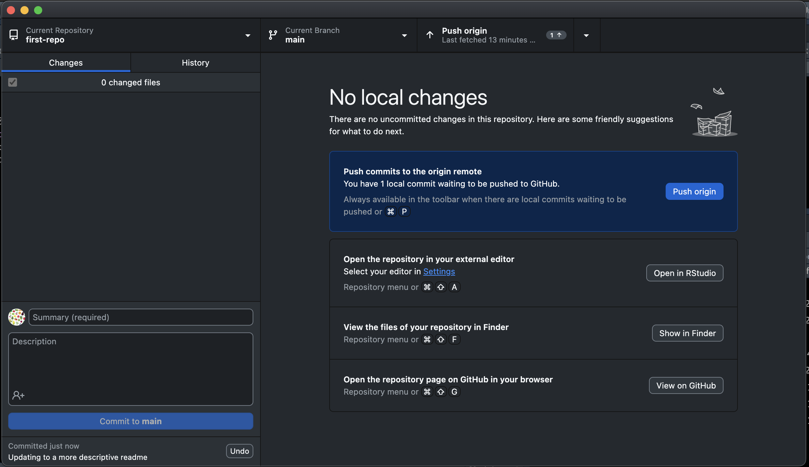
Once we have done that, we are now “working clean,” meaning we have made no new changes to our files being tracked by git, and what is present locally will be the same as what is on GitHub.
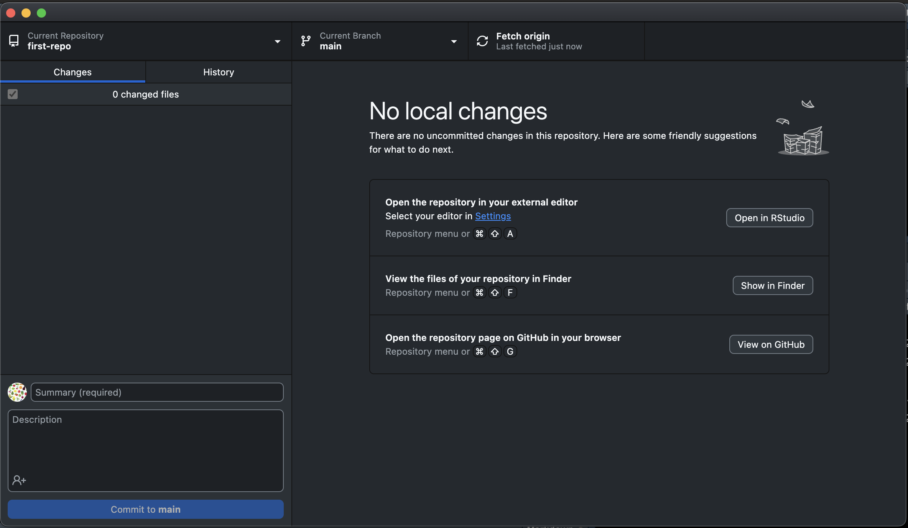
We can look online to see how our repo looks now, a few things to notice:
- Our README has changed - we can now see the changes we made reflected in the README that populates on the home page of our repo. If we click on
README.md, we can also see those changes. - We have a new most recent commit message (here, “Updating to a more descriptive readme”), and we can also see when this commit was made (here, 4 min ago)
- We see now that our repo has a total of 2 commits.
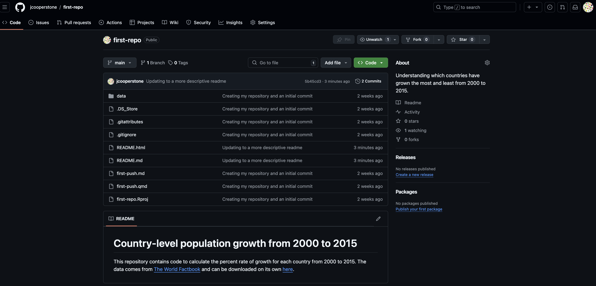
3 Edit our .gitignore
If we look in our repo, we see some files are on GitHub that perhaps don’t need to be there. For example:
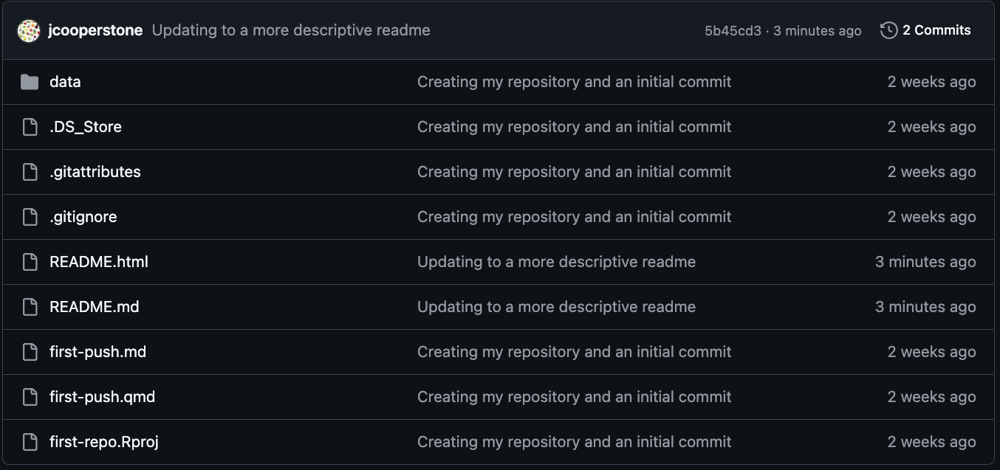
Let’s look at our current .gitignore and see what’s in that file. Mine looks like this:
# History files
.Rhistory
.Rapp.history
# Session Data files
.RData
.RDataTmp
# User-specific files
.Ruserdata
# Example code in package build process
*-Ex.R
# Output files from R CMD build
/*.tar.gz
# Output files from R CMD check
/*.Rcheck/
# RStudio files
.Rproj.user/
# produced vignettes
vignettes/*.html
vignettes/*.pdf
# OAuth2 token, see https://github.com/hadley/httr/releases/tag/v0.3
.httr-oauth
# knitr and R markdown default cache directories
*_cache/
/cache/
# Temporary files created by R markdown
*.utf8.md
*.knit.md
# R Environment Variables
.Renviron
# pkgdown site
docs/
# translation temp files
po/*~
# RStudio Connect folder
rsconnect/This gives you some options to types of files you can put in your .gitignore. Today we are going to add:
.DS_Store- this is a Mac specific filetyle.gitattributes
I will add these files to my .gitignore and leave the rest of the text as it is.
# Mac specific files
.DS_Store
# git attributes
.gitattributesIf I look in GitHub Desktop now, I can see that those changes have been tracked.
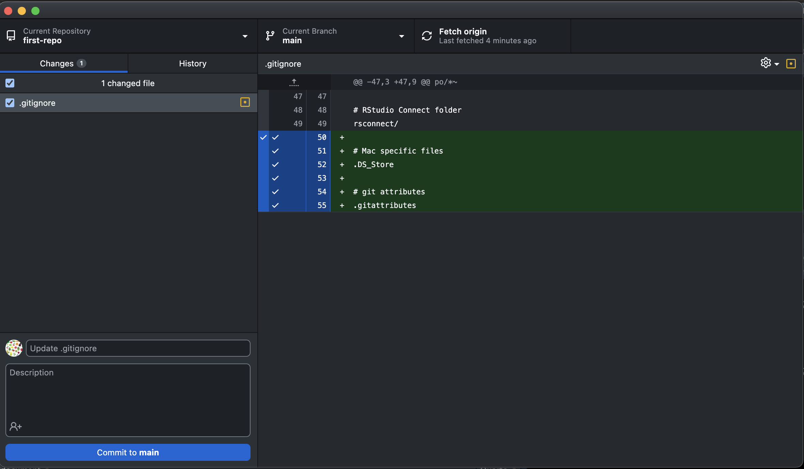
Now, we can make a commit, and then push to main.
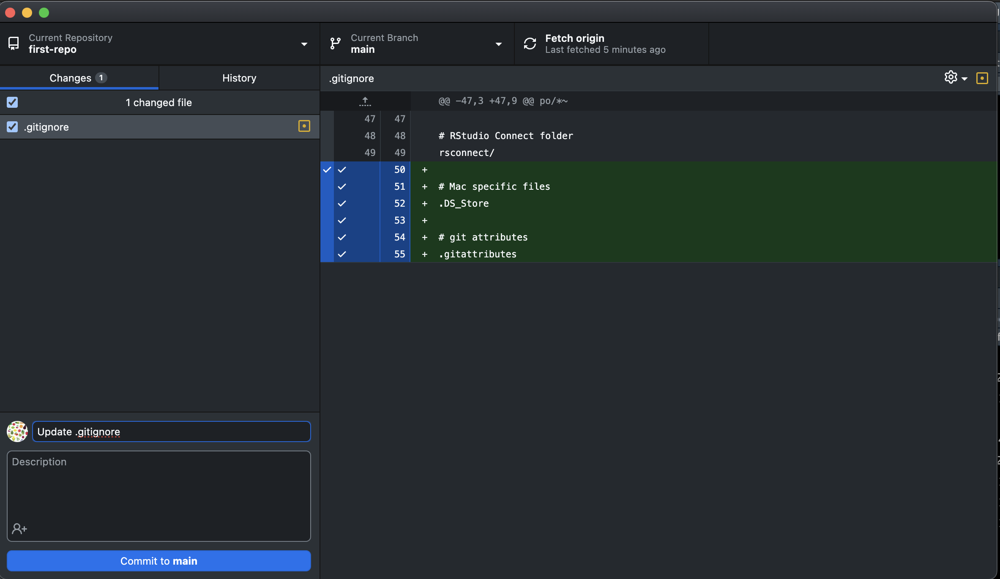
But - when we look at our repo, those files are still there!
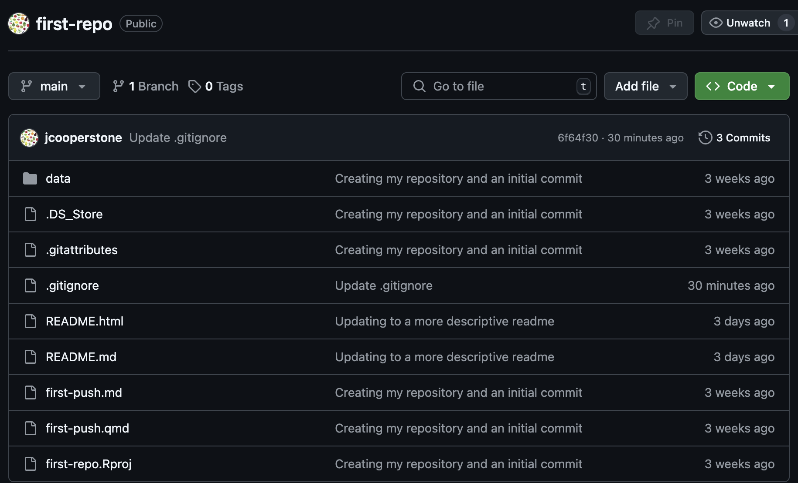
That is because we have told Git to stop tracking them, but we haven’t actually removed them from GitHub. We can do that now.
This is a good opportunity for us to try using the terminal a little, since I can’t figure out how to do this without doing so. In GitHub Desktop, go to Repository > Open in Terminal. This will open up a terminal on your computer in the location of your tracked directory.
In our terminal, we can remove the files we do not want on GitHub. When your terminal is open you should see something like this:
computer-username@name-of-computer repo-name %You will use the command git rm --cached name-of-file to remove the files you added to your .gitignore but are still on GitHub. Two examples are below:
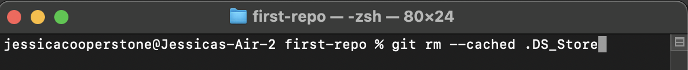
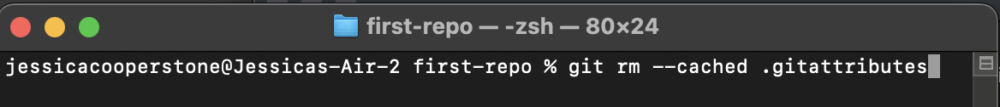
3.1 Practice
Try removing files that you don’t want tracked with git.
3.2 Push our .gitignore changes to GitHub
Now that we’ve removed the files we want, we can push our changes to GitHub. If you look at your GitHub Desktop, you should now see something like this:
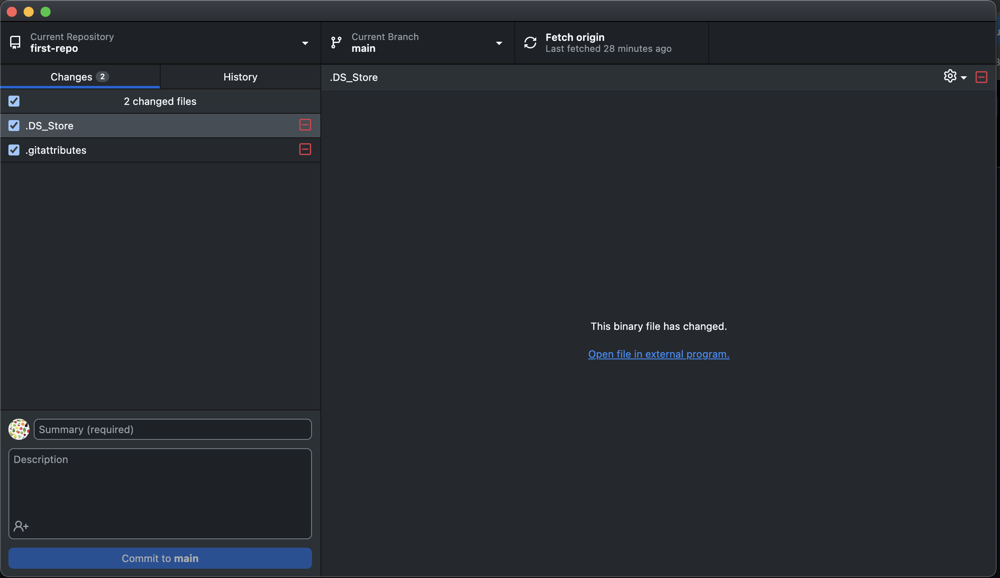
We can make another commit, and push that change to main.
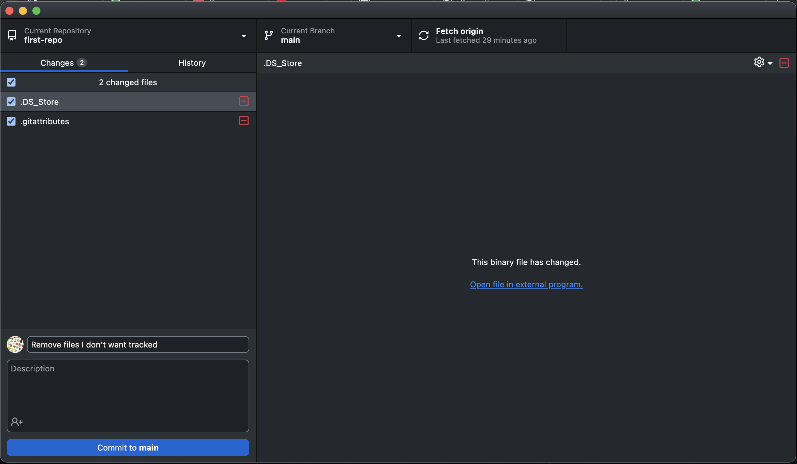
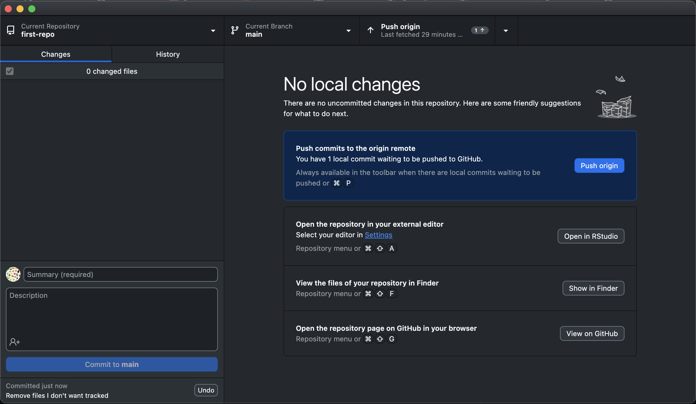
Now, if we look on GitHub, we can see those files are now gone.
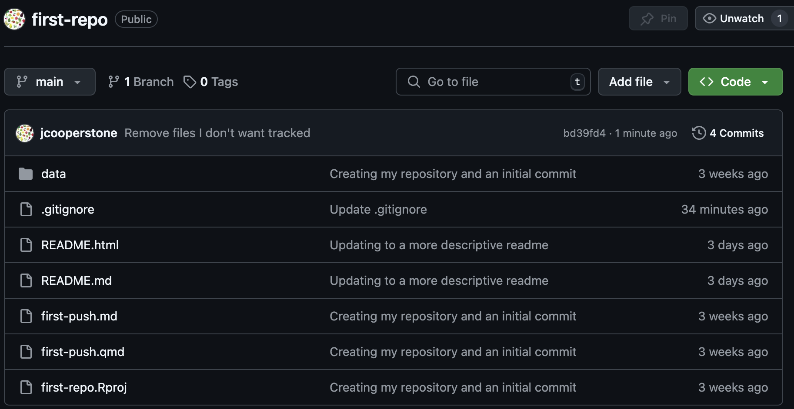
Do keep in mind that those files are not totally gone – if we go back to our original commit, we will see those files again. Keep this in mind, that once something is committed, it is really tracked. You can see this by clicking on “commits” in the top right corner of your repo. When you do this, you can see the whole commit history of this repo.
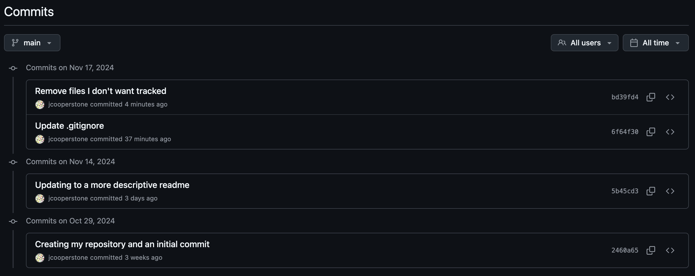
And if we click on our original commit, we can see those files we added to our .gitignore and their contents.
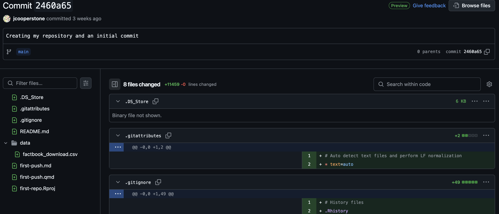